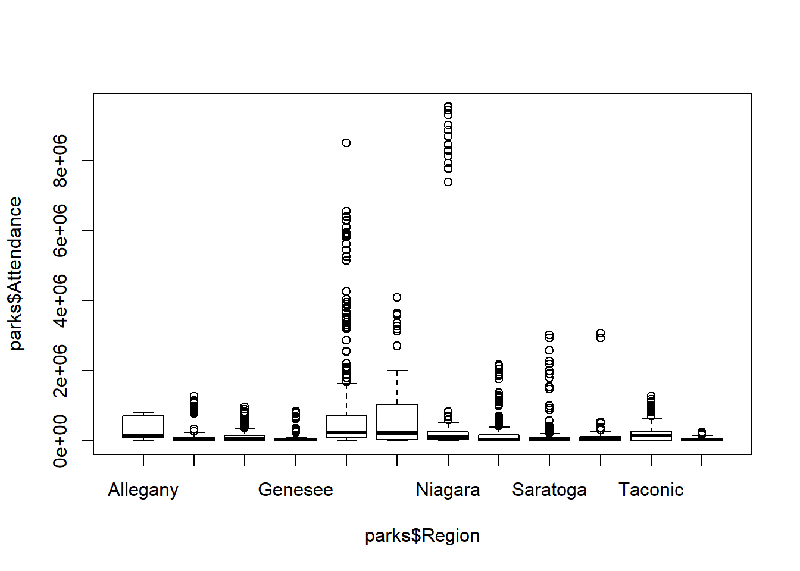

In this chapter, we’ll explore the following key concepts and functions:
str()nrow()ncol()dim()length()rownames()colnames()names()class()levels()head()tail()summary()View()? & help()Desc()glimpse()table()prop.table()ftable()hist()boxplot()plot()pairs()par()ggpairs() (GGally)mean()median()min()max()var()quantile()%>%filter()select()group_by()summarize()ungroup()This chapter uses the following packages (in order of appearance):
Too long; didn’t read? Here’s what you need to know:
str() for structure, summary() for descriptive statsplot(), hist(), boxplot(), pairs()mean(), median(), min(), max()%>% pipes data, group_by(), summarize()data %>% group_by(variable) %>% summarize(count = n())ungroup()
Exploratory Data Analysis (EDA) is the implementation of exploratory techniques to better understand new data. Typically, EDA uses visualizing and summarizing functions to detect patterns and anomalies in data beyond initial hypotheses and research questions.
Practice Data: To demonstrate, we’ll use state park annual attendance from the State of New York’s Office for Parks, Recreation, and Historic Preservation (OPRHP).
library(readr)
url <- paste0("https://data.ny.gov/api/views/8f3n",
"-xj78/rows.csv?accessType=DOWNLOAD") # Assign URL: "url"
parks <- read_csv(url) # Read in data: "parks"
Base R has a litany of functions commonly used in Initial Data Analysis, or IDA.
Data Structure: Function str() is a go-to function for understanding:
str(parks)## Classes 'spec_tbl_df', 'tbl_df', 'tbl' and 'data.frame': 3764 obs. of 5 variables:
## $ Year : num 2018 2017 2016 2015 2014 ...
## $ OPRHP Region: chr "Finger Lakes" "Finger Lakes" "Finger Lakes" "Finger Lakes" ...
## $ County : chr "Tompkins" "Tompkins" "Tompkins" "Tompkins" ...
## $ Facility : chr "Allan Treman Marina" "Allan Treman Marina" "Allan Treman Marina" "Allan Treman Marina" ...
## $ Attendance : num 291507 311260 318309 266112 210543 ...
## - attr(*, "spec")=List of 3
## ..$ cols :List of 5
## .. ..$ Year : list()
## .. .. ..- attr(*, "class")= chr "collector_double" "collector"
## .. ..$ OPRHP Region: list()
## .. .. ..- attr(*, "class")= chr "collector_character" "collector"
## .. ..$ County : list()
## .. .. ..- attr(*, "class")= chr "collector_character" "collector"
## .. ..$ Facility : list()
## .. .. ..- attr(*, "class")= chr "collector_character" "collector"
## .. ..$ Attendance : list()
## .. .. ..- attr(*, "class")= chr "collector_double" "collector"
## ..$ default: list()
## .. ..- attr(*, "class")= chr "collector_guess" "collector"
## ..$ skip : num 1
## ..- attr(*, "class")= chr "col_spec"Dimensions: Like measuring width and height, we can do the same with datasets:
nrow() prints the total number of rowsncol() prints the total number of columnsdim() prints the total number of rows and columnsRecall that in R, dimensions are printed or specified with rows first, then columns.
nrow(parks) # Print total rows## [1] 3764ncol(parks) # Print total columns## [1] 5dim(parks) # Print rows and columns## [1] 3764 5Length: Function length() prints the number of values for a single variable or vector.
length(parks$Facility)## [1] 3764Row & Column Names: Three functions are ideal for printing row and column names:
rownames() prints the names of each row, though rows are rarely namedcolnames() prints the names of each column (i.e. variable)names() also prints the names of each variablerownames(parks)[1:5] # Print row names 1-5## [1] "1" "2" "3" "4" "5"colnames(parks) # Print variable names## [1] "Year" "OPRHP Region" "County" "Facility"
## [5] "Attendance"names(parks) # Print variable names## [1] "Year" "OPRHP Region" "County" "Facility"
## [5] "Attendance"names(parks) <- c("Year", "Region", "County",
"Facility", "Attendance") # Reassign new names
names(parks) # Print new names## [1] "Year" "Region" "County" "Facility" "Attendance"Classes: We can determine the class of any object using function class().
class(parks) # Dataset class## [1] "spec_tbl_df" "tbl_df" "tbl" "data.frame"class(parks$Year) # Variable class## [1] "numeric"model <- lm(Attendance ~ Year + Region,
data = parks) # Assign linear model
class(model) # Model class## [1] "lm"Categorical Levels: Print each category (“level”) of factor variables with levels():
fctr <- as.factor(parks$Region) # Coerce to "factor"
levels(fctr) # Print levels## [1] "Allegany" "Central" "Finger Lakes"
## [4] "Genesee" "Long Island" "New York City"
## [7] "Niagara" "Palisades" "Saratoga"
## [10] "Saratoga/Capital" "Taconic" "Thousand Islands"First & Last Observations: Functions head() and tail() print first and last rows:
head() prints the first rows of your datatail() prints the last rows of your datan =head(parks, n = 3) # Print first 3 rows## Year Region County Facility Attendance
## 1 2018 Finger Lakes Tompkins Allan Treman Marina 291507
## 2 2017 Finger Lakes Tompkins Allan Treman Marina 311260
## 3 2016 Finger Lakes Tompkins Allan Treman Marina 318309tail(parks, n = 3) # Print last 3 rows## Year Region County Facility Attendance
## 3762 2005 Niagara Erie Woodlawn Beach 169049
## 3763 2004 Niagara Erie Woodlawn Beach 151359
## 3764 2003 Niagara Erie Woodlawn Beach 150093Summaries: Function summary() describes individual variables according to their class:
summary(parks)## Year Region County Facility
## Min. :2003 Length:3764 Length:3764 Length:3764
## 1st Qu.:2007 Class :character Class :character Class :character
## Median :2011 Mode :character Mode :character Mode :character
## Mean :2011
## 3rd Qu.:2015
## Max. :2018
## Attendance
## Min. : 0
## 1st Qu.: 19605
## Median : 60574
## Mean : 255272
## 3rd Qu.: 188450
## Max. :9529325View Interactively: In RStudio, function View() presents data in an interactive table.
View(parks)
Figure 1.1: An interactive table resulting from function View() in RStudio’s IDE.
Documentation: If data are from an R package, ? or help() opens documentation.
library(ggplot2) # Load package containing data
?economics # Open documentation with `?`
help(economics) # Open documentation with help()
Figure 1.2: Interactive documentation in RStudio using ? or help().
Many functions allow tallying frequencies and proportions for character and factor variables.
Contingency Tables: Function table() prints total of occurences for qualitative values.
These tables are also called Contingency Tables.
table(parks$Region)##
## Allegany Central Finger Lakes Genesee
## 86 414 446 190
## Long Island New York City Niagara Palisades
## 468 144 288 516
## Saratoga Saratoga/Capital Taconic Thousand Islands
## 322 42 290 558Proportionality: Function prop.table(), with table() output, shows proportionality.
regions <- table(parks$Region) # Assign `table()` output: "regions"
prop.table(regions) # Print proportionality##
## Allegany Central Finger Lakes Genesee
## 0.02284803 0.10998937 0.11849097 0.05047821
## Long Island New York City Niagara Palisades
## 0.12433581 0.03825717 0.07651435 0.13708820
## Saratoga Saratoga/Capital Taconic Thousand Islands
## 0.08554729 0.01115834 0.07704570 0.14824655Functions table() or prop.table() can also weigh variables against eachother.
subset <- parks[, c("Year", "Region")] # Subset two variables
table(subset)[, 1:5] # Frequency of "regions" 1-5## Region
## Year Allegany Central Finger Lakes Genesee Long Island
## 2003 5 26 28 12 29
## 2004 5 26 28 12 29
## 2005 5 26 28 12 29
## 2006 5 26 28 12 29
## 2007 5 26 28 12 29
## 2008 5 26 28 12 29
## 2009 5 26 28 12 29
## 2010 5 26 28 12 29
## 2011 5 26 28 12 29
## 2012 5 26 28 12 29
## 2013 5 26 28 12 29
## 2014 5 26 28 12 29
## 2015 6 26 28 12 29
## 2016 6 26 28 12 29
## 2017 7 25 27 11 31
## 2018 7 25 27 11 31output <- table(subset) # Assign `table()` output
prop.table(output)[, 1:5] # Proportionality of "regions" 1-5## Region
## Year Allegany Central Finger Lakes Genesee Long Island
## 2003 0.001328374 0.006907545 0.007438895 0.003188098 0.007704570
## 2004 0.001328374 0.006907545 0.007438895 0.003188098 0.007704570
## 2005 0.001328374 0.006907545 0.007438895 0.003188098 0.007704570
## 2006 0.001328374 0.006907545 0.007438895 0.003188098 0.007704570
## 2007 0.001328374 0.006907545 0.007438895 0.003188098 0.007704570
## 2008 0.001328374 0.006907545 0.007438895 0.003188098 0.007704570
## 2009 0.001328374 0.006907545 0.007438895 0.003188098 0.007704570
## 2010 0.001328374 0.006907545 0.007438895 0.003188098 0.007704570
## 2011 0.001328374 0.006907545 0.007438895 0.003188098 0.007704570
## 2012 0.001328374 0.006907545 0.007438895 0.003188098 0.007704570
## 2013 0.001328374 0.006907545 0.007438895 0.003188098 0.007704570
## 2014 0.001328374 0.006907545 0.007438895 0.003188098 0.007704570
## 2015 0.001594049 0.006907545 0.007438895 0.003188098 0.007704570
## 2016 0.001594049 0.006907545 0.007438895 0.003188098 0.007704570
## 2017 0.001859724 0.006641870 0.007173220 0.002922423 0.008235919
## 2018 0.001859724 0.006641870 0.007173220 0.002922423 0.008235919
Many R packages are helpful in Initial Data Analysis, e.g. DescTools and dplyr.
Advanced Summaries: In DescTools, function Desc() is an enhanced summary().
library(DescTools)
Desc(parks$Year) # Function `Desc()` on a quantitative variable## -------------------------------------------------------------------------
## parks$Year (numeric)
##
## length n NAs unique 0s mean meanCI
## 3'764 3'764 0 16 0 2'010.50 2'010.36
## 100.0% 0.0% 0.0% 2'010.65
##
## .05 .10 .25 median .75 .90 .95
## 2'003.00 2'004.00 2'007.00 2'011.00 2'015.00 2'017.00 2'018.00
##
## range sd vcoef mad IQR skew kurt
## 15.00 4.61 0.00 5.93 8.00 -0.00 -1.21
##
## lowest : 2'003.0 (235), 2'004.0 (235), 2'005.0 (235), 2'006.0 (235), 2'007.0 (235)
## highest: 2'014.0 (235), 2'015.0 (238), 2'016.0 (238), 2'017.0 (234), 2'018.0 (234)Desc(parks$Region) # Function `Desc()` on a qualitative variable## -------------------------------------------------------------------------
## parks$Region (character)
##
## length n NAs unique levels dupes
## 3'764 3'764 0 12 12 y
## 100.0% 0.0%
##
## level freq perc cumfreq cumperc
## 1 Thousand Islands 558 14.8% 558 14.8%
## 2 Palisades 516 13.7% 1'074 28.5%
## 3 Long Island 468 12.4% 1'542 41.0%
## 4 Finger Lakes 446 11.8% 1'988 52.8%
## 5 Central 414 11.0% 2'402 63.8%
## 6 Saratoga 322 8.6% 2'724 72.4%
## 7 Taconic 290 7.7% 3'014 80.1%
## 8 Niagara 288 7.7% 3'302 87.7%
## 9 Genesee 190 5.0% 3'492 92.8%
## 10 New York City 144 3.8% 3'636 96.6%
## 11 Allegany 86 2.3% 3'722 98.9%
## 12 Saratoga/Capital 42 1.1% 3'764 100.0%Advanced Structures: In dplyr, function glimpse() is a more organized str().
library(dplyr)
glimpse(parks)## Observations: 3,764
## Variables: 5
## $ Year <dbl> 2018, 2017, 2016, 2015, 2014, 2013, 2012, 2011, 201...
## $ Region <chr> "Finger Lakes", "Finger Lakes", "Finger Lakes", "Fi...
## $ County <chr> "Tompkins", "Tompkins", "Tompkins", "Tompkins", "To...
## $ Facility <chr> "Allan Treman Marina", "Allan Treman Marina", "Alla...
## $ Attendance <dbl> 291507, 311260, 318309, 266112, 210543, 292200, 162...
Exploratory Data Visualization or EDV is critical to exploratory analyses.
Several functions exist for exploring data visually in base R.
Histograms: Quickly view the distribution of quantitative variables with hist().
breaks =)hist(parks$Attendance, # Specify a single variable
breaks = 100) # Specify number of breaks and "bins"Box Plots: View several distributions across categorical variables with boxplot().
1.5 * IQR~boxplot(parks$Attendance ~ parks$Region)
Scatter Plots: View relationships between quantitative variables with plot().
Since parks only contains one quantitative variable, we use economics from ggplot2.
library(ggplot2)
plot(x = economics$uempmed, # Median duration of unemployment, in weeks
y = economics$unemploy) # Number of unemployed, in thousandsPairs Plots: Pairs plots create a matrix of small multiples for each variable.
Again, for want of class numeric variables, we use economics from ggplot2.
library(ggplot2)
pairs(x = economics)Model Summaries: Function plot(), used with a model, produces four summary plots.
par(), specify total rows and columns in function c()mfrow = accepts these two values in function par()model <- lm(Attendance ~ Year + Region,
data = parks) # Create linear model: "model"
par(mfrow = c(2, 2)) # Specify dimensions in `par()`
plot(model) # Call `plot()` on modelAdvanced Pairs Plots: Use package ggplot2 extension GGally and ggpairs().
As a more colorful example, we’ll use base R dataset iris.
library(ggplot2)
library(GGally) # Load packages
ggpairs(iris, # Specify dataset
aes(color = Species)) + # Map colors to variable "Species"
theme_minimal() # Preset theme cleans output
Descriptive or Summary Statistics concisely describe datasets or individual variables with summary information, e.g. mean, median, mode, minimum value, maxium value, variance, and more.
While descriptive statistics can be the be-all and end-all of a descriptive analysis, they’re also integral to exploratory data analysis.
Again, base R has no shortage of functions for descriptive or summary statistics.
Mean: The average or mean value of quantitative data is calculated with mean().
mean(parks$Attendance)## [1] 255272.1Median: Find the value of the 50th percentile, or median, with median().
median(parks$Attendance)## [1] 60574.5Minima & Maxima: Find the smallest and largest values with min() and max().
min(parks$Attendance) # The smallest value in variable "Attendance"## [1] 0max(parks$Attendance) # The largest value in variable "Attendance"## [1] 9529325Variance: Determine the variance of quantitative values with var().
var(parks$Attendance)## [1] 612450885211Quantiles: Get quantiles, or the value at 0, 25, 50, 75, and 100%, with quantile().
quantile(parks$Attendance)## 0% 25% 50% 75% 100%
## 0.0 19605.0 60574.5 188449.8 9529325.0
WARNING: SUMMARY STATISTICS & MISSING VALUES
If the quantitative data you intend to summarize contains missing values (NA), the output may not appear as expected.
To tell R that missing values exist, and to exclude them from calculation, simply set argument na.rm = to TRUE.
Tabulate descriptive statistics from summary() output with data.frame().
Why? This provides an easy method to tabulate and write summary statistics to a file.
sumstats <- summary(parks) # Assign summary() output: "park_stats"
sumstats <- data.frame(sumstats) # Coerce to data frame
sumstats[, 2:3] # Print data frame## Var2 Freq
## 1 Year Min. :2003
## 2 Year 1st Qu.:2007
## 3 Year Median :2011
## 4 Year Mean :2011
## 5 Year 3rd Qu.:2015
## 6 Year Max. :2018
## 7 Region Length:3764
## 8 Region Class :character
## 9 Region Mode :character
## 10 Region <NA>
## 11 Region <NA>
## 12 Region <NA>
## 13 County Length:3764
## 14 County Class :character
## 15 County Mode :character
## 16 County <NA>
## 17 County <NA>
## 18 County <NA>
## 19 Facility Length:3764
## 20 Facility Class :character
## 21 Facility Mode :character
## 22 Facility <NA>
## 23 Facility <NA>
## 24 Facility <NA>
## 25 Attendance Min. : 0
## 26 Attendance 1st Qu.: 19605
## 27 Attendance Median : 60574
## 28 Attendance Mean : 255272
## 29 Attendance 3rd Qu.: 188450
## 30 Attendance Max. :9529325
So far, we’ve look at a veriety of ways to explore and summarize datasets and individual variables.
However, you may often seek to summarize and compare subsets of data that are grouped by some common value, category, or label. The following explores how to group and describe data by one or more specified characteristics.
In Section 1.1: Exploratory Data Analysis, we learned about contingency tables.
table()table() in function prop.table()In order to tabulate contingency tables in their own data frames:
ftable() instead of table()data.frame()reg_freq <- ftable(parks$Region) # Assign `ftable()` output: "reg_freq"
data.frame(reg_freq) # Enter output in `data.frame()`## Var1 Freq
## 1 Allegany 86
## 2 Central 414
## 3 Finger Lakes 446
## 4 Genesee 190
## 5 Long Island 468
## 6 New York City 144
## 7 Niagara 288
## 8 Palisades 516
## 9 Saratoga 322
## 10 Saratoga/Capital 42
## 11 Taconic 290
## 12 Thousand Islands 558Likewise, for proportional contingency tables:
ftable() instead of table()prop.table() on the output of ftable()data.frame()reg_freq <- ftable(parks$Region) # Assign `ftable()` output: "reg_freq"
reg_prop <- prop.table(reg_freq) # Assign `prop.table()` output: "reg_prop"
data.frame(reg_prop) # Enter output in `data.frame()`## Var1 Freq
## 1 Allegany 0.02284803
## 2 Central 0.10998937
## 3 Finger Lakes 0.11849097
## 4 Genesee 0.05047821
## 5 Long Island 0.12433581
## 6 New York City 0.03825717
## 7 Niagara 0.07651435
## 8 Palisades 0.13708820
## 9 Saratoga 0.08554729
## 10 Saratoga/Capital 0.01115834
## 11 Taconic 0.07704570
## 12 Thousand Islands 0.14824655
Comign soon…
Comign soon…
Comign soon…
Package dplyr is a unified framework built explicitly for data manipulation in R, e.g.:
We explore most of theis elsewhere. Here, we focus on group-wise operations.
But first, we’ll provide a brief overview of dplyr syntax.
Package dplyr has a somewhat nuanced syntax that is easy to master. Pay attention:
Piping: Package dplyr uses the pipe operator, or %>%, which:
parks %>% # Specify data frame and pipe
filter(Facility == "Allegany Red House Area") # Pass via function `filter()`## # A tibble: 16 x 5
## Year Region County Facility Attendance
## <dbl> <chr> <chr> <chr> <dbl>
## 1 2018 Allegany Cattaraugus Allegany Red House Area 712217
## 2 2017 Allegany Cattaraugus Allegany Red House Area 730926
## 3 2016 Allegany Cattaraugus Allegany Red House Area 715179
## 4 2015 Allegany Cattaraugus Allegany Red House Area 750751
## 5 2014 Allegany Cattaraugus Allegany Red House Area 686068
## 6 2013 Allegany Cattaraugus Allegany Red House Area 790645
## 7 2012 Allegany Cattaraugus Allegany Red House Area 729189
## 8 2011 Allegany Cattaraugus Allegany Red House Area 717013
## 9 2010 Allegany Cattaraugus Allegany Red House Area 728728
## 10 2009 Allegany Cattaraugus Allegany Red House Area 748255
## 11 2008 Allegany Cattaraugus Allegany Red House Area 785967
## 12 2007 Allegany Cattaraugus Allegany Red House Area 800376
## 13 2006 Allegany Cattaraugus Allegany Red House Area 776633
## 14 2005 Allegany Cattaraugus Allegany Red House Area 755990
## 15 2004 Allegany Cattaraugus Allegany Red House Area 761212
## 16 2003 Allegany Cattaraugus Allegany Red House Area 754291Bare Variable Names: Once the dataset is named, you need not type it again.
dataset$x notationnames(parks)## [1] "Year" "Region" "County" "Facility" "Attendance"parks %>% # Call dataset object name
select(Year, Region, Attendance) # Use bare variable names## # A tibble: 3,764 x 3
## Year Region Attendance
## <dbl> <chr> <dbl>
## 1 2018 Finger Lakes 291507
## 2 2017 Finger Lakes 311260
## 3 2016 Finger Lakes 318309
## 4 2015 Finger Lakes 266112
## 5 2014 Finger Lakes 210543
## 6 2013 Finger Lakes 292200
## 7 2012 Finger Lakes 162986
## 8 2011 Finger Lakes 172579
## 9 2010 Finger Lakes 205460
## 10 2009 Finger Lakes 184372
## # ... with 3,754 more rowsTibbles: When passed through dplyr functions, they become tibbles.
In dplyr, function group_by() accepts the bare names of one or more variables.
Notably, grouping does nothing by itself. Data must be piped into a new function.
parks %>%
group_by(Year) # Grouping by a single variable: "Year"
parks %>%
group_by(Region, Year) # Grouping by two variables: "Region", "Year"
As noted, we must use a function to operate on grouped data.
summarize() allows us to make new variables on grouped datasummarize(), the basic formula is: new_variable = function(existing_variable)Here, we create new variable Average from existing variable Attendance:
parks %>% # Invoke "parks"
group_by(Year) %>% # Group by "Year"
summarize(Average = mean(Attendance)) # Create "Average" with `mean()`## # A tibble: 16 x 2
## Year Average
## <dbl> <dbl>
## 1 2003 221030.
## 2 2004 224557.
## 3 2005 236424.
## 4 2006 231387.
## 5 2007 241475.
## 6 2008 232762.
## 7 2009 241125.
## 8 2010 245525.
## 9 2011 243497.
## 10 2012 256640.
## 11 2013 255906.
## 12 2014 264439.
## 13 2015 275063.
## 14 2016 291394.
## 15 2017 305861.
## 16 2018 317033.Multiple Summary Variables: Create multiple new variables in one summarize() call.
parks %>%
group_by(Year) %>%
summarize(Mean = mean(Attendance),
Median = median(Attendance),
Maximum = max(Attendance),
Records = n()) # Create multiple new variables## # A tibble: 16 x 5
## Year Mean Median Maximum Records
## <dbl> <dbl> <dbl> <dbl> <int>
## 1 2003 221030. 48230 7390268 235
## 2 2004 224557. 48304 7779887 235
## 3 2005 236424. 50642 7762999 235
## 4 2006 231387. 50868 7756133 235
## 5 2007 241475. 62697 7924083 235
## 6 2008 232762. 58626 7925725 235
## 7 2009 241125. 61527 8130765 235
## 8 2010 245525. 59480 8274942 235
## 9 2011 243497. 56084 8448914 235
## 10 2012 256640. 66184 8690962 235
## 11 2013 255906. 60107 8863301 235
## 12 2014 264439. 61392 9011709 235
## 13 2015 275063. 68521 9296962 238
## 14 2016 291394. 68198. 9529325 238
## 15 2017 305861. 79600 9435285 234
## 16 2018 317033. 77894. 9516147 234Multiple Grouping Variables: We can use multiple variables in group_by().
5 * 10, or 50 groupsX, not Y, means Y is then excludedparks %>%
group_by(Year, Region) %>% # Group on variables "Year", "Region"
summarize(Mean = mean(Attendance),
Median = median(Attendance))## # A tibble: 176 x 4
## # Groups: Year [16]
## Year Region Mean Median
## <dbl> <chr> <dbl> <dbl>
## 1 2003 Allegany 351875 192079
## 2 2003 Central 88790. 41128.
## 3 2003 Finger Lakes 93691. 42539
## 4 2003 Genesee 92704. 15320
## 5 2003 Long Island 624115. 196520
## 6 2003 New York City 332013. 118444
## 7 2003 Niagara 536725. 93284
## 8 2003 Palisades 205155. 20650.
## 9 2003 Saratoga 100925. 48230
## 10 2003 Taconic 161300. 93131
## # ... with 166 more rowsCreating Summaries of Summaries: Use variables from summarize() in the same call!
parks %>%
group_by(Year) %>%
summarize(Mean = mean(Attendance),
Total = sum(Attendance), # Create "Total"
Proportion = Total / sum(parks$Attendance)) # Use "Total" in formula## # A tibble: 16 x 4
## Year Mean Total Proportion
## <dbl> <dbl> <dbl> <dbl>
## 1 2003 221030. 51942100 0.0541
## 2 2004 224557. 52770940 0.0549
## 3 2005 236424. 55559694 0.0578
## 4 2006 231387. 54375864 0.0566
## 5 2007 241475. 56746576 0.0591
## 6 2008 232762. 54698971 0.0569
## 7 2009 241125. 56664442 0.0590
## 8 2010 245525. 57698351 0.0600
## 9 2011 243497. 57221809 0.0596
## 10 2012 256640. 60310499 0.0628
## 11 2013 255906. 60137898 0.0626
## 12 2014 264439. 62143120 0.0647
## 13 2015 275063. 65465017 0.0681
## 14 2016 291394. 69351725 0.0722
## 15 2017 305861. 71571568 0.0745
## 16 2018 317033. 74185653 0.0772Assigning Summary Output: Preface summarize() calles with assignment, <-.
mean_att <- parks %>% # Assign expression to "mean_att"
group_by(Year) %>%
summarize(Mean = mean(Attendance))
mean_att # Autoprint results## # A tibble: 16 x 2
## Year Mean
## <dbl> <dbl>
## 1 2003 221030.
## 2 2004 224557.
## 3 2005 236424.
## 4 2006 231387.
## 5 2007 241475.
## 6 2008 232762.
## 7 2009 241125.
## 8 2010 245525.
## 9 2011 243497.
## 10 2012 256640.
## 11 2013 255906.
## 12 2014 264439.
## 13 2015 275063.
## 14 2016 291394.
## 15 2017 305861.
## 16 2018 317033.Ungrouping: As a rule, consider whether to use function ungroup() after group_by().
ungroup()mean_att <- parks %>%
group_by(Year) %>%
summarize(Mean = mean(Attendance)) %>%
ungroup() # Don't enter a world of pain
WARNING: SERIOUSLY, DON’T FORGET UNGROUP()
ungroup().Use ungroup().
The following resources may prove helpful to the curious learner.